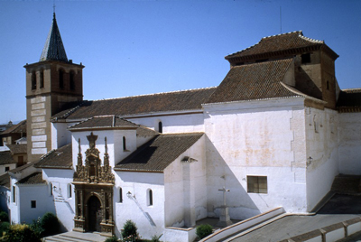

Construcción del siglo XVI y acabada en el XVII (1642), sobre el lugar que ocupó la antigua mezquita mayor de Caniles.  En 1488, con la llegada de los Reyes Católicos a esta zona, se instaura el culto cristiano en estas poblaciones y en el año 1506 se instaura las parroquias de la zona eligiéndose a la población de Caniles dos parroquias: la Santa Maria de la Anunciación y San Pedro. En los primeros años del siglo XVI se empieza a construir los templos parroquiales el de S. Pedro situado en el barrio bajo, desaparecido en la actualidad, y de Sta. Maria en el barrio alto. En el año 1792 se fusionan las dos parroquias quedando como único templo parroquial el que había sido sede de la parroquia de Sta. Maria. Tenían vida propia e independiente, recogidas por dos párrocos y beneficios distintos, los libros sacramentales distintos. Llamada desde entonces: Parroquia de Santa María y San Pedro, como sigue en la actualidad. El motivo de esta fusión fue la falta de feligreses en la Iglesia de San Pedro del barrio bajo fueron subiendo al barrio alto y otro motivo fue el derrumbe del tejado causado por el mal estado y una tormenta, lo que ocasiono el abandono total. Es también curioso el dibujo de Caniles que figura en el Catastro de Ensenada del año 1752, consta las dos parroquias, de la de San Marcos, la de S. Miguel y el Convento de los Padres Franciscanos Recoletos, quedando algún resto de este último. Por último todos los nombres de los fieles y bautizados constan escritos en los libros de este Archivo Parroquial que se conserva como una reliquia de incalculable valor. Los autores de dicha parroquia son: Francisco de Axea y Ginés Esteban, es de arte Mudéjar. En principio constaba de una sola nave, con una capilla mayor elevada por unos peldaños, cubierta con un espléndido artesonado mudéjar, con el tiempo se amplio con dos naves laterales. La portada principal es de mármol flanqueado por columnas, rematadas encima por entablamento, dado que el II Cuerpo, un frontispicio con bajo relieve -el medallón de la anunciación- se desprendió en 1954. La fachada de ladrillo visto, característico de este tipo de construcciones del mudéjar granadino, fue enlucida y pintada en 1914. El edificio esta adosado en su cabecera a otro de viviendas entre las que se encuentra la casa Parroquial y un salón para reuniones, catequesis,... Ahora se conserva en perfectas condiciones, tras la restauración entre 1994 -1996.

Desde Enero hasta Marzo
De lunes a sábado: Capilla de 19:00 h. Misa a las 19:00 h.
Domingo: Capilla y Misa de 9:30 h. 12:00 h. Tarde 19:00 h.
MAR
Semana Santa
AGO
Motivo de la Coronacion
MAR
Cristo Rey